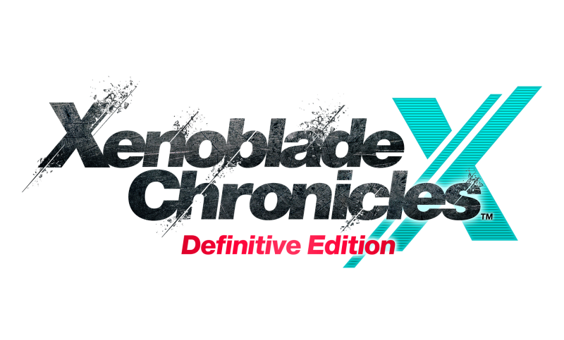

Xenoblade Chronicles X: Definitive Edition

| Release Date: | March 20th, 2025 |
| Genre: | Action JRPG |
| Developer: | Monolith Soft |
| Platform: | Nintendo Switch |
| Details: | Nintendo |
Xenoblade Chronicles X is the second game created within the Xenoblade series, originally released on the Wii U, but recently been remastered for the Nintendo Switch. While disconnected from the plot of other entries of the series, it follows similar gameplay aspects from those games. I recently hopped back onto this game, as life finally calmed down a bit and I'm glad I took that break. This game turned into an investment to play, just from the sheer amount of content crammed into it. I've finished the entirety of the story and just about all of the side quests, and ended up with nearly 130 hours of playtime!
Gameplay
Unlike Xenoblade 1, it was the gameplay that mainly kept me playing. Where Xenoblade 1 felt like an "Open Level" sort of game due to it's linear progression, this game was truly an open world and is designed around that. My first 50 hours of the game I barely touched the story, as I was able to completely focus on side quests, expanding FrontierNav to unlock more fast travel points, finding pockets of enemies that were just the right level for me to defeat comfortably, but still give significant amounts of experience.
The game sticks to the original style of Xenoblade 1 in terms of exploration and combat. Unique monsters and fast travel points are generously scattered around the map to uncover, and the usual positioning combat and using arts to deal damage or apply buffs/debuffs. The main difference is exploration has a much great emphasis in this game, where you need exploration completion to advance through the story. While this may feel like a roadblock, I never hit a moment where I didn't have enough exploration, as there's always something to uncover when exploring. I constantly found myself saying "I'll just explore around the corner then head back to town", and then two hours later find myself with three more waypoints discovered.
With that, it's not all sunshine and rainbows. While I found the gameplay loop fun overall, it starts and ends at the very extremes of itself. At the beginning, majority of enemies can simply destroy you, but to get any significant experience, you need to fight stuff above your level. It was a pain to try to find quests or enemies that I could complete early on, which made it hard to take on the enemies constantly defeating me. However, once you get over the early level grind, the game opens up enough to not be a constant fight for survival, and feels like progress can actually be made. By the end of the game though, literally nothing could stop me, as with the build I settled on allowed for anything to die in a single hit, even when they're way above my level.
I also found the equipment system to be rather complicated, as every weapon and armor piece you encountered could have up to three innate augments. On top of that, you could equip three custom augments as well, which you can craft these yourself from materials of defeated enemies. The number of augments is so much, that my eyes just glazed over them for majority of the game... It didn't feel like the tutorial explained them well at all, and it wasn't till I read other player's suggestions that I knew what to look for, for it turned out majority of these augments were simply unhelpful.
Also, people aren't kidding when they say you need to wait till halfway through the game to gain access to the controllable mechs, the big aspect of the game. With how powerful they are, it makes sense why they don't allow them early on, but man they would've been nice during the early game.
Story & Worldbuilding
I don't think the story is as strong as Xenoblade 1, but it still had me intrigued. The initial premise really caught me, of the survivors of Earth's demise, scrapping together their spaceship's wreckage to try to survive on this unknown planet was great. I was expecting a more fantasy-like story, but this mixed that xenoblade storytelling into pure sci-fi, and I found that to be really cool!
Alongside the main story, there's a ton of other side quests available to experience and learn more about the world. There's normal side quests that involve NPCs in the town and their stories, or setting up infrastructure on the planet to aid the growing population. A lot of these side quests are in series, becoming their own story. There's also party member specific quests, which usually involve the backstory of one of the many playable characters you have on your squad. It made the world feel alive and helped show that despite the situation these survivors are in, they're determined to make a life here on Mira.
Visuals & Audio
People say this soundtrack is pretty weak in comparison to the rest of the series, and I have no idea what they're smoking. I absolutely love this game's soundtrack. It has that xenoblade feeling I had from the previous games, as it really enhanced that atmosphere when exploring around the planet, but when in combat, the vocals kick in, and just get me amped up for a fight. Like the music that plays when fighting a special enemy, I'd say is equivalent to the final boss music of other RPGs I've played. It's unnecessary epic for something that happens so frequently, but I'm not complaining!
Visually I'd say the game was pretty much equal to Xenoblade 1, enough detail to be enjoyable, and with the high render distance it really made it feel like we're exploring a whole planet. I did experience a number of slowdowns on my switch, especially later on when exploring with my Skell, and there was significant pop-in with enemies and NPCs that I'd have to stay still for a while just for them to spawn. Sounds like a hardware problem, as it seems like the Switch 2 doesn't have those issues, but worth noting for those who haven't upgraded yet.
Overall Thoughts
This was a really fun game to play, but I'm glad to be done with it. It was hard to get into, but after a while it was a constant loop of explore, finish quests, get rewards, repeat, and that's great! Just, there's so much to do that by the end of the game, I just wanted to be done. I probably should have taken break to space out these play sessions, but I wanted to know what happened next! Or to finish this last quest! I don't think everyone would enjoy this game, especially with the slower start than the previous xenoblade game, but if you stick through it and enjoy the core xenoblade experience, then this can hook for you a long time.